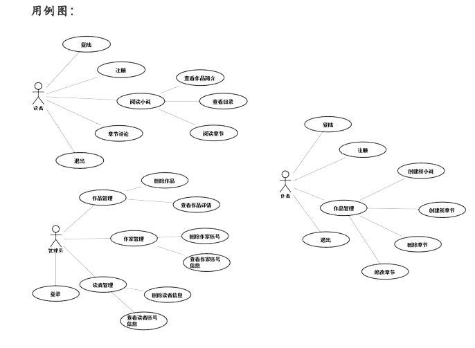

后台语言：ASP.net；数据库：Mysql；服务器配置：IIS服务器

网站主页，左边为PC端截图展示，右边为移动端截图展示，拖动两个小滚动条浏览

进入作品详情页面，左边为PC端截图展示，右边为移动端截图展示，拖动两个小滚动条浏览
阅读章节正文，可选择上一章、下一章、回目录
左边为PC端截图展示，右边为移动端截图展示，拖动两个小滚动条浏览
从主页的作家专区登录，登录成功后进入作家作品管理页面
左边为PC端截图展示，右边为移动端截图展示，拖动两个小滚动条浏览
创建新作品，左边为PC端截图展示，右边为移动端截图展示，拖动两个小滚动条浏览
写新章节，左边为PC端截图展示，右边为移动端截图展示，拖动两个小滚动条浏览